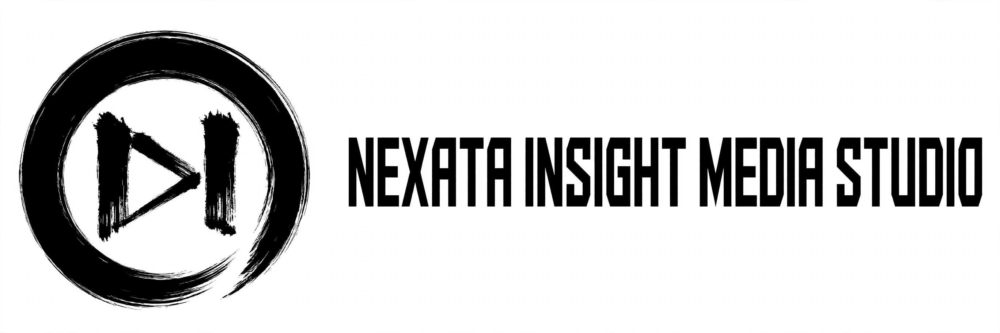
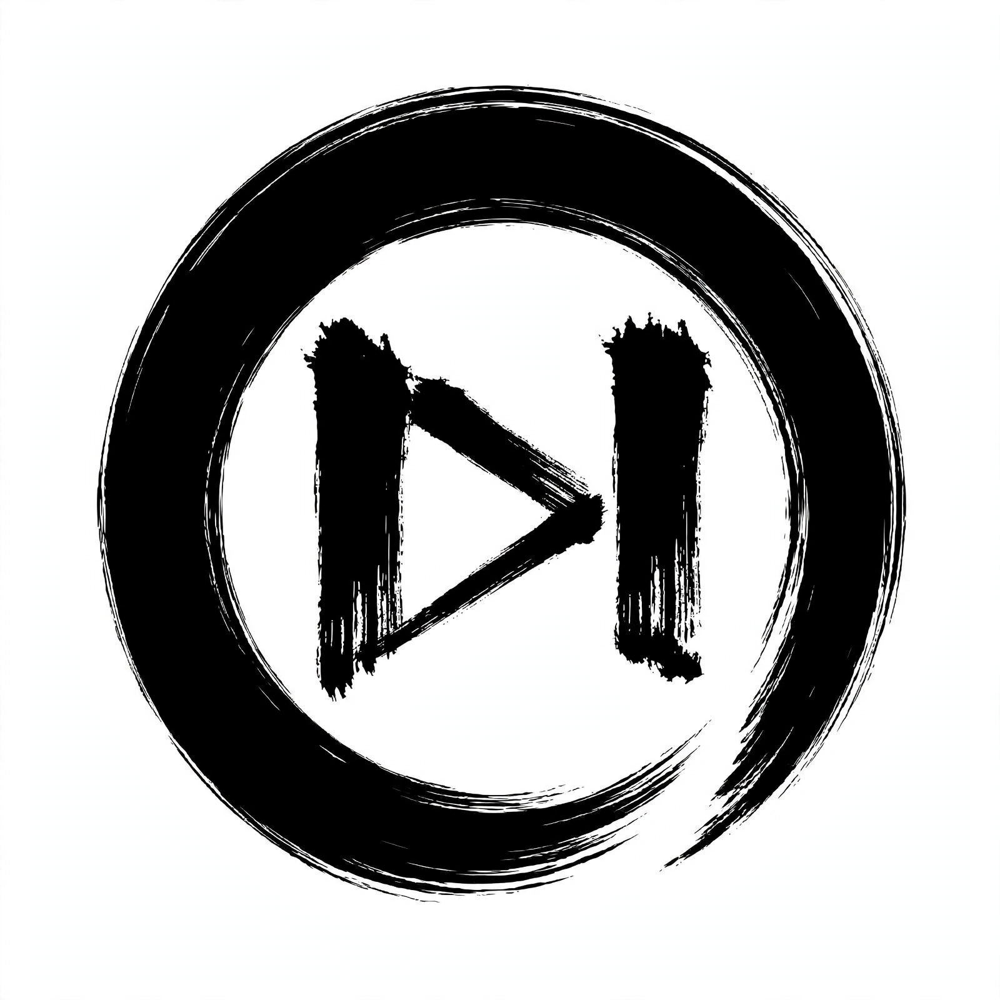

NEXATA INSIGHT MEDIA STUDIO es un espacio digital dedicado a la creación, análisis y difusión de contenido informativo, educativo y cultural. Nuestro enfoque está orientado a la investigación, la lectura consciente y el pensamiento crítico.
Brindar contenido original, claro y accesible que informe, inspire y motive a la reflexión, fomentando la lectura y la investigación responsable.
Ser un medio digital de referencia en la creación de contenido educativo y cultural, reconocido por su calidad y compromiso.